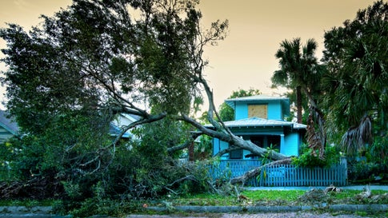

North Florida Family Stays Home During Hurricane
In North Florida - Jennifer Walden, Director of Operations at WikiLawn Lawn Care in Texas, had first-hand experience with Hurricane Irma. They decided to stay for a number of reasons, including financial stress and lack of available places to shelter that would welcome their pets. "We're definitely not the type to just wait it out and downplay a hurricane," says Walden. Their home at the time was not particularly sturdy, which concerned Walden. "We lived in a mobile home that had essentially been strapped down to a foundation, I was genuinely afraid the house wouldn't survive it." Amazingly, their mobile home barely moved. They did sustain some tree damage, but it was nothing serious. This was likely due to the preparations they made ahead of the hurricane. "We boarded up the windows the day before the storm came, since it took that long to be certain it was going to take the path it did (which was another reason for our hesitation in leaving)," she explains. "We of course also brought everything inside, and my husband took down a branch near the house that was mostly dead and just barely hanging on." While they made it through the storm relatively unscathed, Walden remembers having moments of wishing they'd found a way to leave. "The worst of the winds hit us between 1 and 2am, if I remember right, which is a terrifying time to experience that. I definitely wished we'd left then." Flooding from Hurricane Irma in Bonita Springs, FL (Getty Images/Robert LeBlanc) Since Irma, the Waldens moved to Texas, which does see far fewer hurricanes, and reside in a home with a solid foundation. Read full article here.